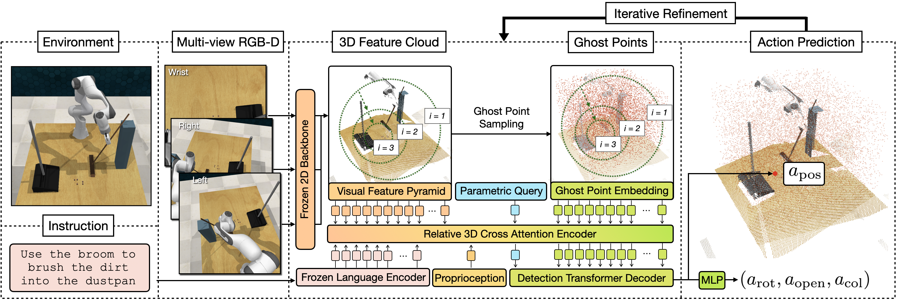
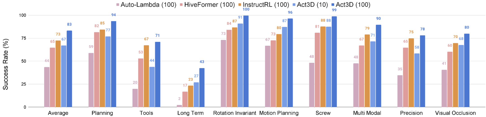
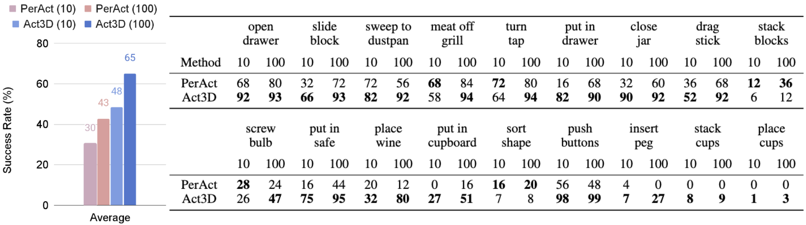

3D perceptual representations are well suited for robot manipulation as they easily encode occlusions and simplify spatial reasoning. Many manipulation tasks require high spatial precision in end-effector pose prediction, typically demanding high-resolution 3D perceptual grids that are computationally expensive to process. As a result, most manipulation policies operate directly in 2D, foregoing 3D inductive biases.
We propose Act3D, a manipulation policy Transformer that casts 6-DoF keypose prediction as 3D detection with adaptive spatial computation. It takes as input 3D feature clouds unprojected from one or more camera views, iteratively samples 3D point grids in free space in a coarse-to-fine manner, featurizes them using relative spatial attention to the physical feature cloud, and selects the best feature point for end-effector pose prediction.
Act3D sets a new state-of-the-art in RLbench, an established manipulation benchmark. Our model achieves 10% absolute improvement over the previous SOTA 2D multi-view policy on 74 RLbench tasks and 22% absolute improvement with 3x less compute over the previous SOTA 3D policy. In thorough ablations, we show the importance of relative spatial attention, large-scale vision-language pre-trained 2D backbones, and weight tying across coarse-to-fine attentions.
Act3D is a Transformer manipulation policy trained with supervised learning to predict a 6-DoF end-effector pose from one or more RGB-D images, a language instruction, and proprioception. The key idea is to detect end-effector poses in the robot's workspace by learning 3D perceptual representations of free space with arbitrary spatial resolution via recurrent coarse-to-fine 3D point grid sampling and featurization.
Act3D featurizes multi-view RGB images with a pre-trained 2D backbone and lifts them in 3D using depth to obtain a multi-scale 3D scene feature cloud. It then iteratively predicts 3D foci of attention in the free space, samples 3D point grids in their vicinity, and featurizes the sampled 3D points using relative cross-attention to the physical scene feature cloud, language tokens, and proprioception. Act3D detects the 3D point corresponding to the next best end-effector position using a detection Transformer head and regresses the rotation, end-effector opening, and collision avoidance action.
We test Act3D in learning from demonstrations single-task and multi-task manipulation policies in simulation and the real world. In simulation, we test Act3D in RLbench in two settings to ensure a clear comparison with prior work: a single-task setting with 74 tasks proposed by HiveFormer and a multi-task multi-variation setting with 18 tasks and 249 variations proposed by PerAct.
Single-task performance. On 74 RLBench tasks across 9 categories, Act3D reaches 83% success rate, an absolute improvement of 10% over InstructRL, prior SOTA in this setting.
Multi-task performance. On 18 RLBench tasks with 249 variations, Act3D reaches 65% success rate, an absolute improvement of 22% over PerAct, prior SOTA in this setting.